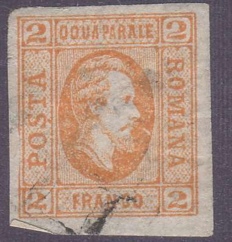
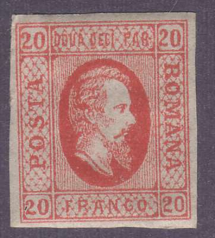
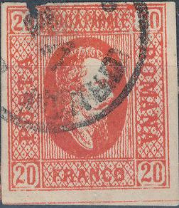
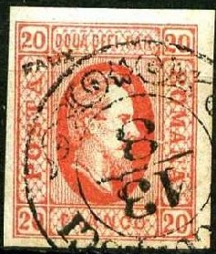

Return To Catalogue - Rumania - Cancels on stamps of Rumania
Note: on my website many of the
pictures can not be seen! They are of course present in the
catalogue;
contact me if you want to purchase it.
For stamps of Rumania, issued earlier, click here.
2 p yellow 5 p blue 20 p red
For the specialist; there are two types of the 20 p, one with the oval with the king touching the frame at the bottom and another one, where the oval does not touch the frame at the bottom.
Value of the stamps |
|||
vc = very common c = common * = not so common ** = uncommon |
*** = very uncommon R = rare RR = very rare RRR = extremely rare |
||
| Value | Unused | Used | Remarks |
| 2 p | R | RR | |
| 5 p | *** | RRR | |
| 20 p | *** | *** | |
Cancels:

Forgeries exist, examples:
(Reduced sizes)
The cancels are an easy way to distinguish these forgeries. Other fancy cancels exist (such as dots arranged in squares or lines, or parallel lines). These forgeries are described in 'The Spud Papers I'. In the genuine 2 p yellow, the '2' in the left lower corner should not be placed in the center of the rectangle, but slightly to the left. The head is too small in the forgeries and the 'O' of 'FRANCO' has a flat bottom. In the 5 p blue forgery, the lattice work background is too strong and the letters are badly formed. Three of the '5' s are too flat. There is a white dot in the hair on the forehead. The 20 p forgery has the figures of value too tall. The top of the '2' in the upper left corner almost touches the frame (it should touch it). The inscription 'DOUA DECI PAR' is badly visible in the forgery. In all three values the head looks different from the genuine stamps. These forgeries were also sold by Fournier (he also offered more dangerous forgeries of these stamps, by the way).
There is also a forgery of the 20 p with inscription "DOUA PARALE" instead of "DOUA DECI PAR":

"DOUA PARALE" instead of "DOUA DECI PAR"
forgery. The second stamp has a typical
'VF' cancel.

More forgeries with a typical 'VF' cancel.


Forgery of the 5 pa stamp, with different dot cancels and the
"VF" cancel.
A 2 parale stamp with 'DOUA DECI PAR' inscription instead of
'DOUA PARALE'
Other, more dangerous forgeries exist, some with the dot missing under the 'S' of 'POSTA'.
Forgery of the 5 p (Oneglia?) with the '5's too big (especially
at the bottom).

Forgery of the 2 pa stamp; the bottom's of the '2's are all flat,
the beard of the King is strange and too white.
Another set of forgeries.

A very dubious 2 pa stamp.

Forgery with 'FAUX' overprint. I've seen more forgeries with this
'BUCURESCI 13/8' cancel.

Fournier forged cancels; I've seen the 20 pa in a Fournier Album
with the 'GALATI 4/9' cancel and a 5 pa with the above forged
'JASSY 10 8 FRANCA' cancel.
Unissued stamps with "POSTA ROMANA" on top with the portrait of Prince Cuza in a circle exist, they were prepared in 1866. Examples:


Another proof from 1865 in a lion design.
For the next issue (1866 issue) click here.


{kind=link}
{kind=link}
{kind=link}
{kind=link}
{kind=link}